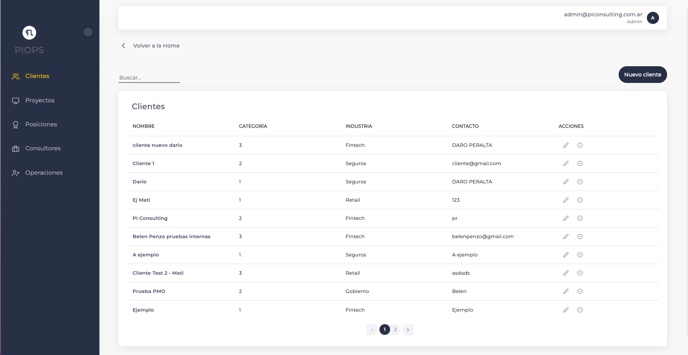

Clientes
Vista general de la sección
 En esta pantalla podremos ver los clientes en la tabla, poder agregar un nuevo cliente, modificarlo y/o eliminarlo. También podremos hacer una búsqueda de los clientes dentro de la tabla.
En la tabla encontramos los siguientes datos
Nombre
Indica el nombre del cliente.
Categoría
Indica la categoría en la que se encuentra el cliente.
Industria
Indica en que industria se encuentra el cliente.
Contacto
Indica el contacto de cada cliente.
Acciones
Indica las acciones que podemos hacer en la tabla (editar y/o eliminar). Editar: El usuario cuenta con la posibilidad de editar el cliente actual. Eliminar: El usuario cuenta con la posibilidad de eliminar un cliente.
¿Cómo agregamos un cliente?
Para comenzar, dirígete al botón en la esquina superior derecha etiquetado como “Nuevo cliente”.
Una vez que hagas clic en este botón, aparecerá una ventana emergente como la siguiente:
Aquí es donde ingresamos los detalles del nuevo cliente:
- Cliente: Ingresa el nombre del cliente que deseas agregar.
Continuamos con los siguientes pasos:
- Categoría: Selecciona la categoría a la que pertenece el cliente.
- Industria: Escoge la industria a la que está asociado el cliente.
Finalmente, agregamos la información de contacto del cliente y procedemos:
- Contacto: Agrega la información de contacto del cliente.
Luego de haber completado todos los campos necesarios y estés seguro de que la información es correcta, haz clic en el botón “Agregar cliente”. Esto creará el nuevo registro del cliente y verás una notificación como la siguiente:
¿Cómo editamos un cliente?
Lo primero que tenemos que hacer es ir al cliente que queremos editar en la pantalla.
Apretar el siguiente botón dentro de la fila del cliente requerido.

Nos aparecerá una pantalla con los datos del cliente, desde ahí podemos hacer la modificación que requerimos.
Una vez que estemos seguros de nuestras modificaciones hacemos click al botón “Guardar cambios”, esperamos que la modificación esté lista y nos deberá aparecer una notificación (arriba a la derecha) con la siguiente información:
¿Cómo eliminamos un cliente?
Lo primero que tenemos que hacer es ir al cliente que queremos eliminar en la pantalla.
Apretar el siguiente botón dentro de la fila del cliente requerido:

Nos aparecerá un pop up comentando cómo afecta esta acción a los datos que están a punto de perderse.
Si estamos seguros de hacer esta acción, hacemos clic en el botón “Eliminar cliente”.

Errores que nos podemos encontrar en la sección

Si tenemos algún error por falta de algún campo requerido al guardar vamos a tener este error.

Podrías tener este error si el cliente tiene otras entidades relacionadas y al borrarlo se rompe la integridad.

Podrías tener algún error de estos si el cliente sigue vigente con la empresa.